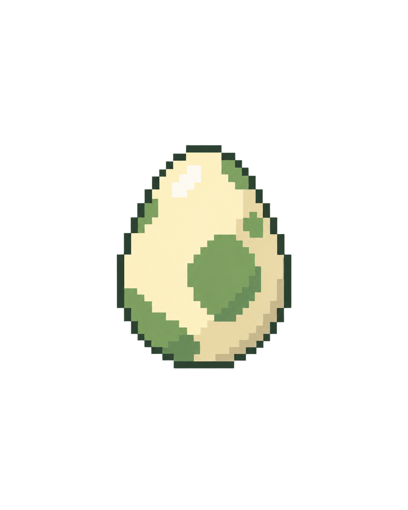
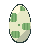
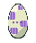
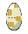


<!doctype html><html lang="zh-Hant"><meta charset="utf-8"><meta name="viewport" content="width=device-width,initial-scale=1"><title>精靈蛋預覽</title><style>body{margin:24px;background:#192b43;color:#eef6ff;font:16px/1.7 system-ui}main{max-width:1000px;margin:auto}.grid{display:flex;flex-wrap:wrap;gap:20px}figure{margin:0;padding:20px;background:#2c455f;max-width:300px}img{max-width:100%;width:160px;height:auto;image-rendering:pixelated}a{color:#8cdbff}</style><main><h1>精靈蛋預覽</h1><p>素材預覽；不會消耗道具、孵化或發放獎勵。</p><div class="grid"><figure><figcaption>奶黃色蛋殼與綠色斑點</figcaption></figure><figure><figcaption>1 級精靈蛋</figcaption></figure><figure><figcaption>2 級精靈蛋</figcaption></figure><figure><figcaption>3 級精靈蛋</figcaption></figure><figure><figcaption>4 級精靈蛋</figcaption></figure><figure><figcaption>共用孵化動畫（自動循環示範）</figcaption></figure></div><p><a href="USAGE.md">規則與使用方式</a></p></main></html>